smth i realised at some point is since i haven't really finished/released anything as of now, the game projects n such that i've worked on are fairly unknown apart from the little i share on twitter and in private discord servers n all that
that changes with this page!
here i will share any unfinished projects i have made to make sure they are not lost to time (and to also actually prove that i know how to code in case i wanna use this page in that manner lol)
throughout 2021-2023 i messed with learning how to code/using game engines a lot and made a bunch of projects where i just tested random things before i tried to make any of these "actual" games
if you're wondering about engines, all of these were made in godot
i've messed with unity for the sake of learning and i've thought of using it for certain ideas but i haven't really had a good enough excuse to do so yet
i might add to this at some point, but most of my other "unfinished projects" are mostly just ideas that i threw out before i made anything substantial for them

as far as i can recall, this is the first major game project that i ever attempted to create, this being a fangame for plants vs zombies
anything i tried to make is not really meaningful enough for me to still remember/have saved on my pc lol
while i could go into every little idea i had for pvz dmsm, for the purposes of this being a basic overview and getting to the stuff im more interested in (the code), i'll provide the basic ideas i had for it
✨dimensions✨(i am, and was, very aware of pvz dimensional destruction's existence, but i have not seem them do anything with the gimmick lol)
each world in pvz dmsm takes place within a dimension - these worlds are fantanstical in a similar way to pvz2's time travel theme, but do things that pvz2 couldn't
the exact list of ideas/worlds changed a lot, but some of the ones that stuck around a lot were:
for the sake of having somewhere to start, this is the basic test level i worked on when implementing all the mechanics
plants have to be made in this specific folder structure in order for everything to work properly, and have an easily editable resource file in order to edit any common attributes


for clarification, the "slot" option describes whether the plant behaves like a pot/lily pad, or a pumpkin - i figured this was kinda important to implement early since it would result in up to 3 plants being on top of each other


most of the other attributes are pretty self explantory if you know how pvz works, but there is one other thing to the plants - animations (obviously)
with the way that i handled animations, they were stored in a seperate scene from the plant for the sake of being able to instance them in not only the plant, but also when the player is "holding" the plant, or in the "mini almanac"


speaking of the plant scenes, all plants inheret from a single "common" plant that basically has all the functionality you need for a basic plant


point is, this makes code for sunflower and peashooter simple as hell


and due to how plants and tiles are coded, pumpkin and lily pad don't need much code at all apart from setting certain parameters


while not being shown in the level video, tiles have a few things going on with them


i did make the admittedly bizarre decision to place tiles manually (for the sake of being easy to edit?), which is improved on later, but for now we're stuck with level templates lol


not gonna bother showing all the tile code, so here's just the code for different plants on a tile and them being visually ordered

zombies are pretty basic/unfinished (as you saw by the arm particle just kinda floating in the video lol), and they're pretty similar to the plants in how they're stored

the most interesting thing about them by far is the testing i did for in-engine animation and using texture atlases, but that's about it

the level script is the 2nd longest/most complicated script i made for this project, as it handled various things such as menu buttons, sun, tiles, etc


but it turns out that the longest script in the game is the seed packet handler that is under it lol

there's a lot more i can get into when it comes to the code, with little specific things getting kinda complicated like the structure of the "mini almanac" or the code behind placing a plant, but i think it's time to move onto..
there was sort of a loss of motivation to continue working on it, and i feel like the main reason was because i was making progress way too slowly due to focusing on the presentation of what was essentially a prototype
i spent way too much time on testing plant/zombie animations, making a little spinning save icon for when the game saves your settings, or perhaps the best example, the entire splash sequence, despite the fact that all of this had literally no art made for it lol
there wasn't really enough attention being paid to continuing to implement all the basics and just what the hell i wanted in terms of mechanics and new things for this game, so yeah, this project was pretty much doomed from the start
that being said, a project that aims way too high and doesn't have much focus on game content is a pretty common learning experience for most game devs, so hey, i don't think it was a totally negative experience

(this one didn't really have any sort of wip logo lol)
cattocafe was a pretty basic concept inspired by papa's pizzeria (a flash game), being a bit less ambiguous in scope
i've been a bit obsessed with the idea of making a pvz fangame for awhile (you'll be seeing another one later), but i figured cattocafe would be a nice first (original) game to make
especially considering the fact that the game was dead simple, consisting of basically just dragging things onto other things and then giving that to a customer
(the art quality slowly gets worse as i stop trying to get bogged down in presentation again lol)

as you can see from this image, the game was gonna have around 18 ingredients from which you could make multiple types of "products", depending on what you put on the menu and what the customer asked for
i have two versions of the cattocafe godot project, this first "unfinished prototype" and a later one
what products you can even put on the menu depends on what ingredients you have, which you would buy from a shop after the "day" ended with the money you made from the cafe (this wasn't implemented yet in this prototype, so this was tested via changing the save file lol)
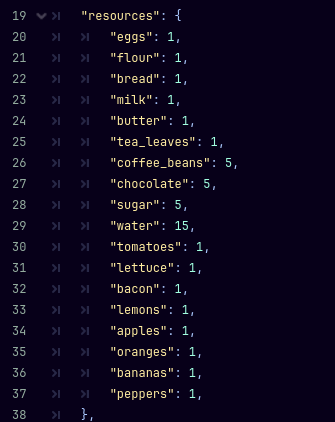 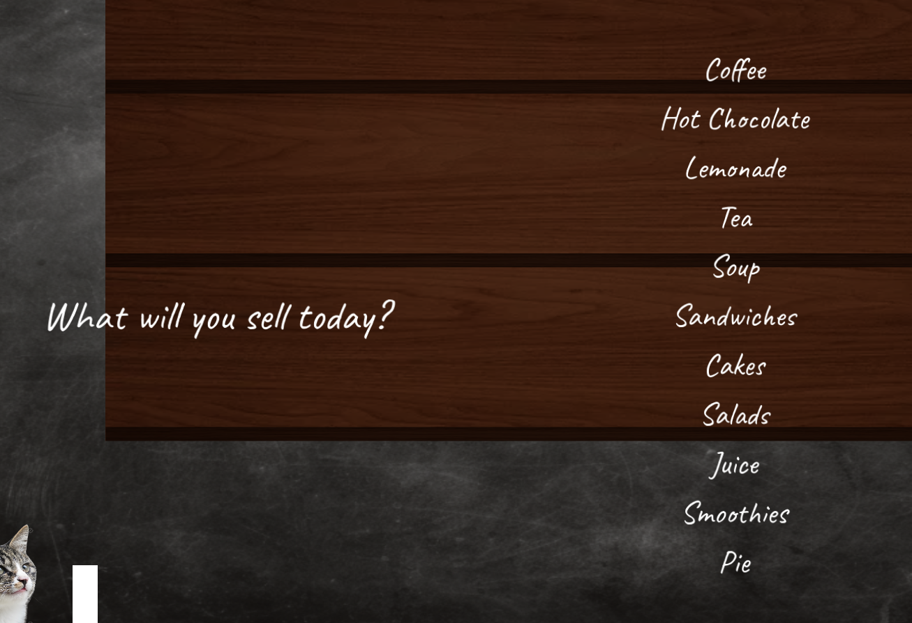i did need a surprising amount of code for defining what products needed what resources, as well as accounting for alternatives in the recipes, not to mention i have to spawn the appliances/tools you need
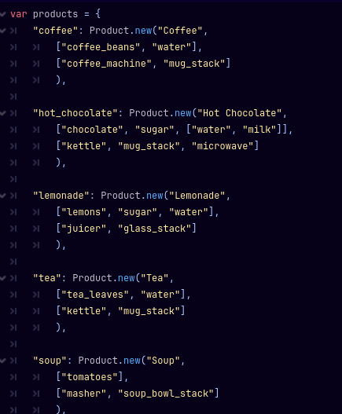 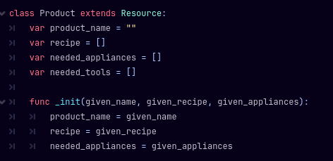as i said, the appliances/tools you needed for each product you're selling that day (you can only sell 4 at a time) would automatically spawn, meanwhile you were intended to drag the ingredients from the left side (none of them had logos lol)
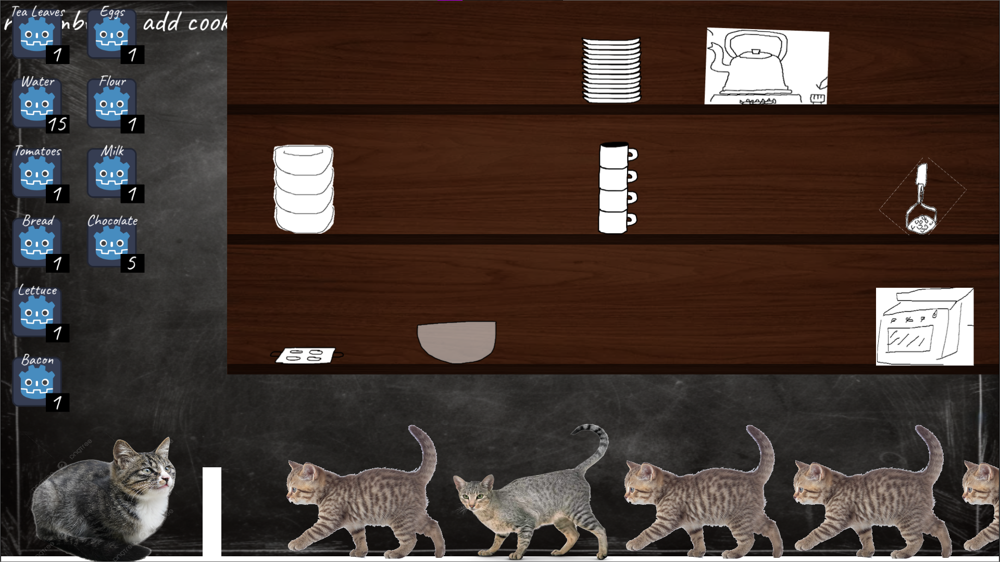 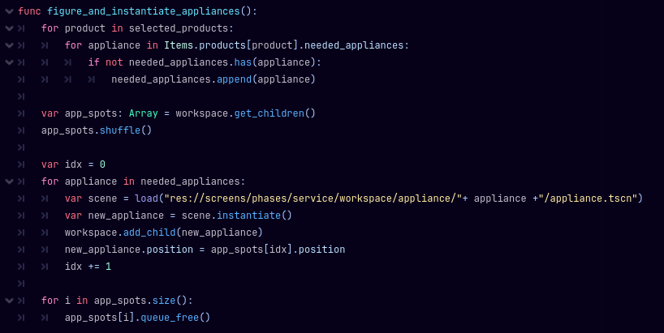 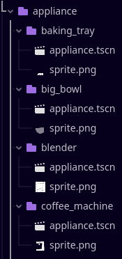"tool" script, this would be things such as the mug or the masher in the screenshot, which could be dragged around the workspace
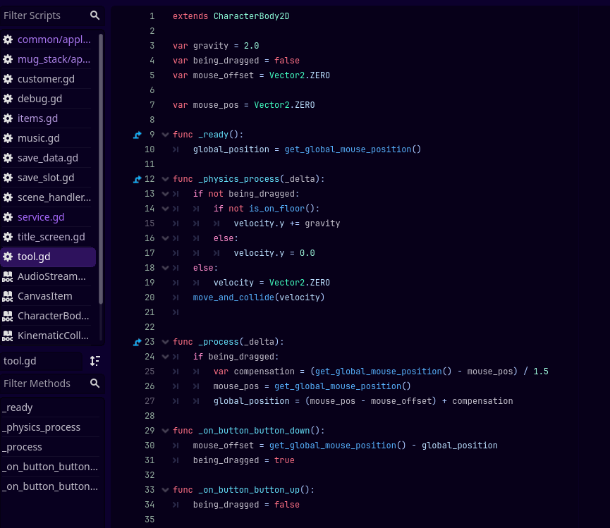the reason this "prototype" was left unfinished is mostly because i knew what i wanted at this rate and felt like reconstructing everything for the sake of making it nicer to work with, thus why i dubbed it "the prototype"
i'll explain why this version is even more unfinished in a moment, but let's go over the changes
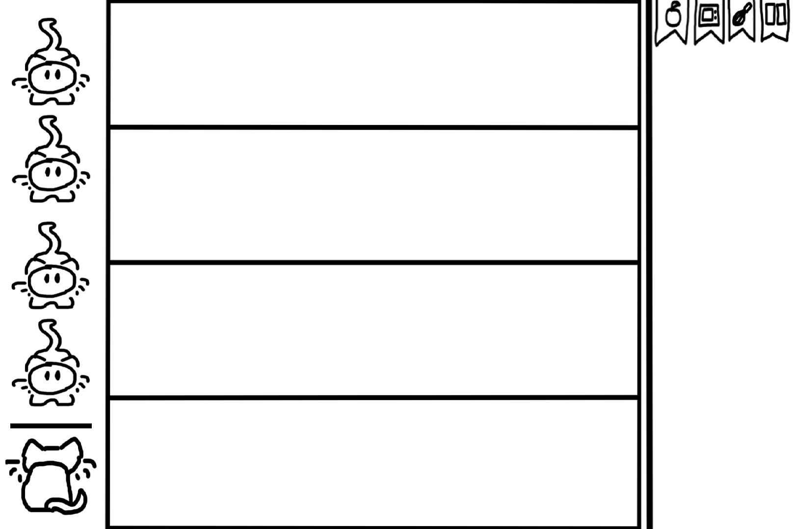the "workspace" was given way more screen real estate, and i added a menu on the right from where you would drag out your ingredients, appliances, and tools (which you would all get from the shop now (which also actually exists in this version, even if you can't get to it without the console i made)), aswell as a "cookbook" that would explain all the recipes in the game
you can also see i opted for 3 shelves like in the og version instead of the 4 in the concept drawing lol
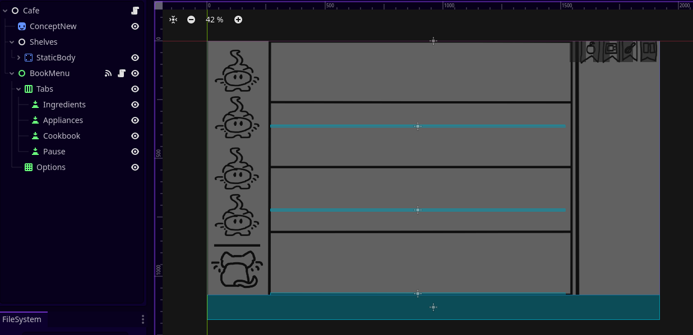all the things you have bought from the shop are saved in the save file, and this time ingredients are also stored as resources (like the plant/zombie info files that you can edit from pvz dmsm!)
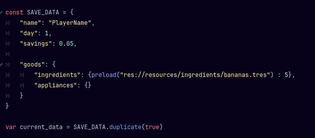 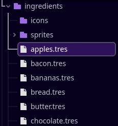 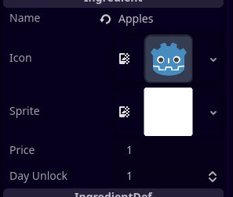"day unlock" references a mechanic i planned to add where you wouldn't have access to all the ingredients/appliances in the shop immediately, and would instead unlock more options from the shop over time
you've probably been wondering this for a good minute now, considering the fact that the scope of this game was pretty small and it was a simple cosy cafe game, why didn't i finish it and release this as my first game? well...
the game isn't fun
let me tell you something i've been keeping secret this entire time: the "shop" phase of the game was originally completely different, where instead of buying ingredients, you would scavange for them in a rougelike type minigame, creating a gameplay loop sorta similar to something like cult of the lamb (despite the fact that i never really got far in cotl lol)
the problem with this entire concept was that it made the scope kinda damn ambiguous as the rougelike part of this game was not a developed idea gameplay-wise at all, the concept simply being "the cafe is nice and cosy, but it's actually a post-apocalypse outside"
for quite awhile i didn't want to scrap the scavange phase due to the themeing, but eventually i convinced myself it'd be for the best
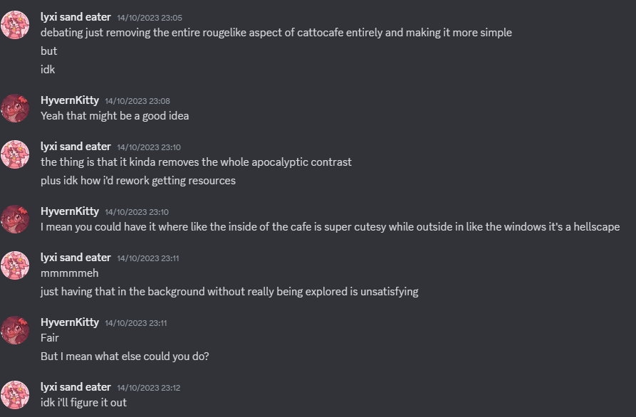
there was then something else i realised when i replaced the scavange phase with the shop, that being that the cafe phase is not really interesting at all, as i had said, it's literally "dragging things onto other things"
this is why after implementing the shop in v2 i abandoned it so quick, as i realised that i really didn't like the gameplay of this game, which pretty much made me lose all interest in continuing to work on the game
even if part of my brain was telling me that "every small game dev's first game is flawed, and you need to put something out there already", my total lack of motivation still made it pretty hard to continue as i felt like there was no point in making a game that wasn't fun
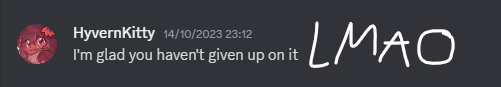
i'll finish this later